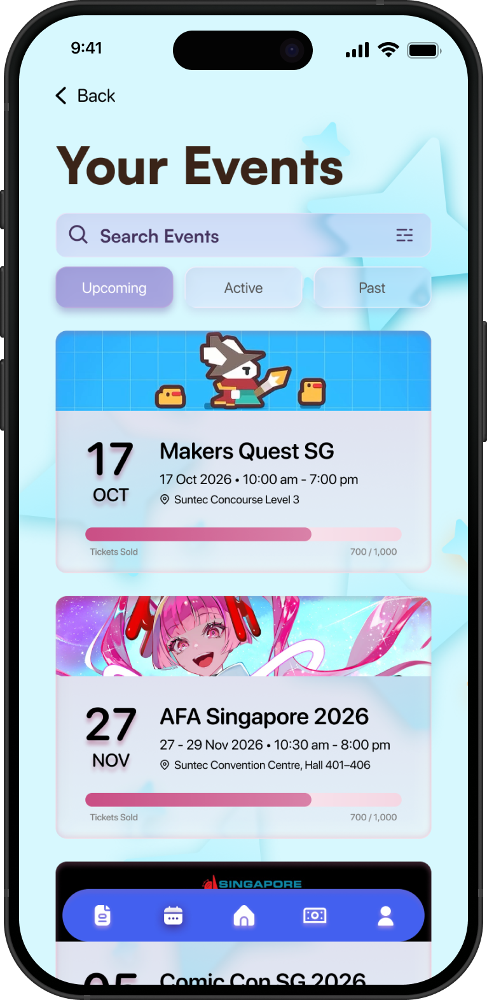

CONVEX
Team project
Paper prototyping, usability testing, Figma
Paper prototyping, usability testing, Figma
I designed the organiser side of CONVEX, a mobile app for managing conventions and markets. After usability testing, I replaced weekly arrows with a calendar picker and made the revenue breakdown expandable, so organisers could jump to a date range and see what made up the total.
View project
